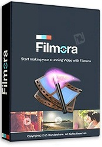
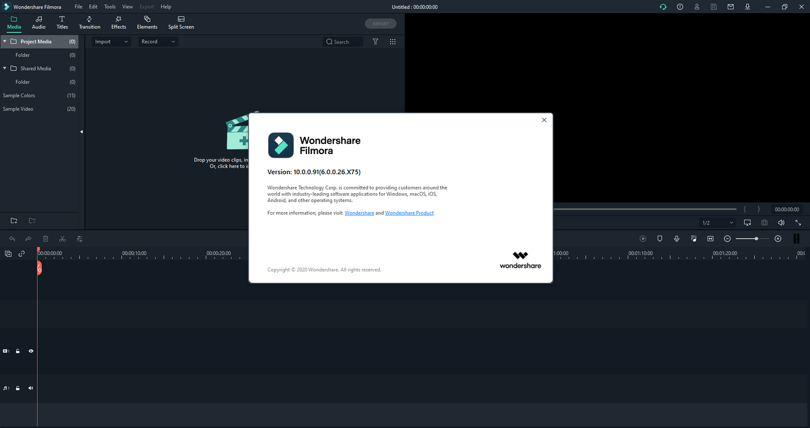

FYC://Wondershare Filmora 10.0.0.91 (Repack & Portable) {B4tman}
=-=-=-=-=-=-=-=-=-=-=-=-=-=-=-=-=-=-=

Home
Download/Stream:
Torrent
Magnet
Play now (Stream)
Descption:

Description:-
Empower your imagination – a video editor for all creators. Filter, Overlays, Transitions and Custom Titles. Create Without Limits. Discover infinite ways to express yourself. Achieve a refined look with endless effects.
Features:-
• Supports all SD and HD videos, including WMV, AVI, MP4, FLV, MOV, MKV, MTS, etc. You can also capture
video directly from a video capture device or add video from camcorders and other external hard drives.
• Add background music to videos. All standard audio formats like MP3, WMA, WAV, M4A, AAC, AC3, OGG, etc.
• Import photos as BMP, JPG, PNG, GIF, etc., and create home movies with photos and videos.
• Editing and personalizing video / photo / audio with video editing: crop, rotate,
adjust the duration, etc.
• Add stylish captions to videos and photos with customizable fonts, colors, and more.
• Take your movie to the next level right away with professional and creative effects.
• Add transition effects between two clips and apply motion effects to photos,
to achieve a natural and smooth transition.
• Get optimized videos for playback on portable devices like iPhone, iPad, PSP, iPod, etc.
• Save the edited video to your hard drive for later use in various video formats.
• Directly upload video to YouTube
• Burn videos to DVD discs or save as DVD folders or ISO image files.
Repack Info:
1. Both Portable and Installer in a Single Setup File.
2. Already Registered (patch pawel97)
3. Multilingual interface (including Russian / translation by lrepacks.ru/)
4. Removed files of modules for sending bug reports, auto updates, Wondershare Helper Compact
5. Ability to block automatic loading of effect packages into the Trial and Sample programs
6. Possibility of picking up and auto copying user settings files of the program * .xml format
7. Ability to pick up and autorun effect packages * (posted separately).
Screenshots:-
